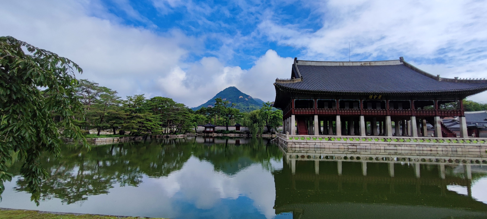
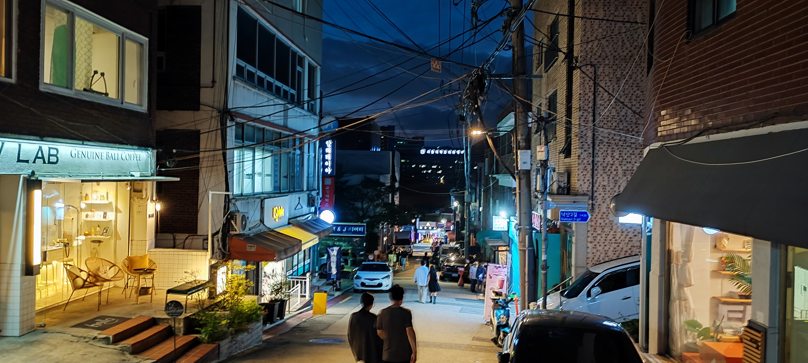
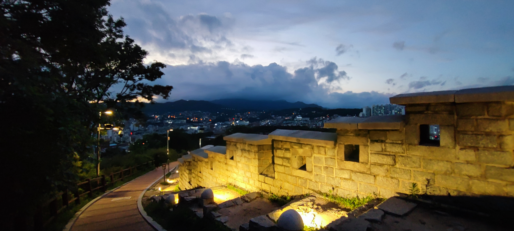
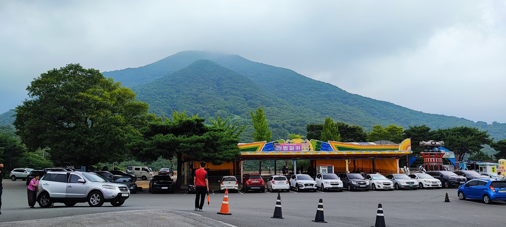
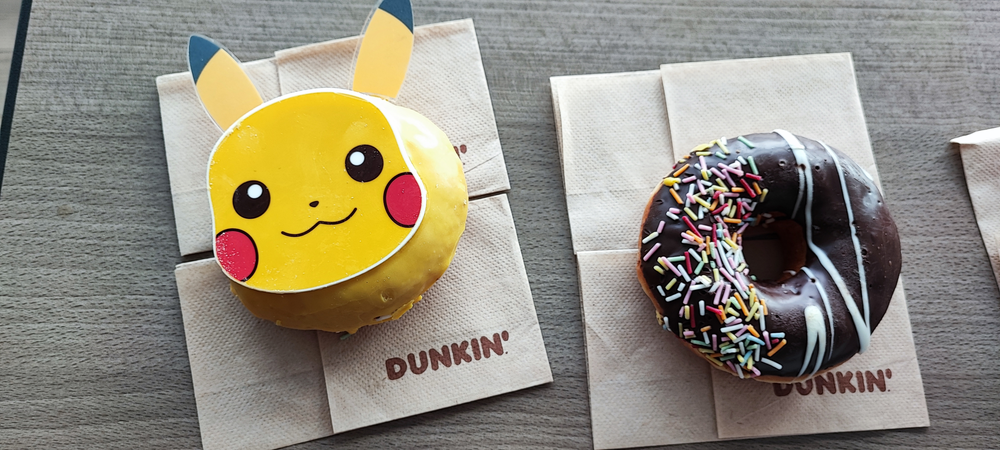

Intro
Hello! I got a lot of help from about entry requirements and skimming places to go on various online forums, so I figured I’d share my experiences and maybe help allay some travel concerns for anyone planning to go to Korea late summer. I went with my father and younger sister, both of us Asian but not Korean (with zero Korean speaking skills - this was hilarious)… we also booked super annoying flights (not so hilarious)
We are US Citizens, routing through Canada, but with no landside stop. This would require you to take a Covid test in Canada, because it resets the clock, so if you’re doing a connection and don’t have the time to wait for your test results to come back, be careful!
Other notes: 1.) we came during the supposed height of monsoon season, but we only got rained on a single afternoon despite every “next day’s” forecast being rain. Lucky. 2.) ALWAYS CARRY YOUR PASSPORTS! They are your only form of legal ID and are super useful. 3.) This trip was kind of supposed to mix a bit of “daily life in Korea” into the mix, so we looked at a lot of not-typical things, like huge HomePlus stores, the Costcos there, the local markets. My dad’s friend showed us around Suwon, his apartment, the workplace, and his son showed us around the schools, recreation, etc. It’s very cool.
Entry
July - (Before Trip): Filled out K-ETA. We’re American. Got approved within 20 minutes. Made sure to specify hotel address, and email is important!! Didn’t have a Korean number immediately so filled in my US one, but you will want to have an email for all your entry things to keep them together before you pick up a sim card. Downloaded Naver Maps (in english mode) and Kakao T, and made an account for Kakao T. Google maps is inadequate (it draws walking lines through buildings, has weird transit directions sometimes, and has completely wrong operating hours for most businesses/places) and Kakao T is horribly important when you leave a major city. We packed somewhat light so we didn’t need the taxis to get to and from airports.
July 7th: Took a PCR test at the local CVS at 14:00 or so. They satisfied the PCR test requirement because it was 2 days in advance of our first flight to Canada, and even though it was over 48 hours, it satisfied the “48 hours until 0 hour” rule Korea has. Most of you won’t need to bother with double rules like this, because you don’t have a 40 hour flight plan.
July 8th: Received PCR tests from CVS at night. Tests said they’d come back in 1-2 days so this was nice because we had more time to fill out Q-Code. I filled out the Q-Code forms for all three of us and they returned the QR Codes to me in an email within an hour.
July 9th: Checked into BWI. Flew to Canada. Found out even if you don’t enter landside, you still must do ArriveCAN. IF you’re flying a Canadian connection and don’t plan to enter the country, do it beforehand. After landing in Toronto, stayed airside through International Connections (fairly fast process), got settled down to sleep.
July 10th: Got onto the Seoul flight, painful delays.
July 11th: Landing in Seoul/Incheon! We were given forms on the plane for Covid declaration (but only if you hadn’t done Q-Code), customs declaration, and a visit card. We filled out the latter two. After landing, they ushered us towards lines where people checked our Q-Code forms (super smooth and fast), and then sent through customs, immigration, and picked up our bags.
We did our Covid tests at the airport outside, at the Transportation Center. I had read on this subreddit that the free public health centers were starting to check for long term residency for foreigners, so we played it safe and paid for tests. We booked ahead through the GoSafe website and set the appointment 1.5 hours after our flight was meant to arrive to be ultra safe, but we arrived slightly late because of flight delays (thanks Air Canada). They didn’t care much. We got the test results by email in about 2 hours.
We bought 3 T-Money cards from the Transportation Center for 4000 won each (later I learned that we overpaid - standard T-Money cards are 2.5k at convenience stores. However, we got Tourist Cards, which have special benefits, so it’s worth the extra cost if you go to some specific places. Do some research!), and got on the AREX train to get to Seoul. Transferred to the 1 train, they have cool conveyor belts to help you move heavy luggage if you’re tired after a long flight and the airport. Got to hotel, checked in, with negative entry tests, and felt great because we could finally be assured our vacation could start with no issues!
All in all, entry was super smooth. Just make sure to do your K-ETA and Q-Code and you should be fine.
Trip
Night: Cheonggyecheon Stream, and got dinner at Burger King because nothing else was open. This was a lesson - a lot of places in Korea don’t stay open late past like 20:00, and they don’t open until late too, until 8:00 to 10:00.
July 12: Morning: Hyundai Dept Store Seoul, I-Seoul-U sign. Afternoon: Myeongdong Shopping Street, DDP. Holy crap what a day, I was awfully tired. Noodles for dinner on tired feet was a good feeling. Not much to say, shopping and architecture, other than Myeongdong being destroyed by COVID. Oh, and we picked up our SIM card here. It’s very far from the airport, but the benefits are unlimited call/text/data for just like 29 USD. We got the Lite plan - 300mb of fast data, but the “slow” data is still 3mbps, good enough for most everything.
July 13: Morning/afternoon: Starfield COEX Mall/Library (pronounced Liberry by my sister). Night: Lotte Tower Rained on! Went back to the hotel and found a local museum to go to, walked around some shops. COEX was pretty fun! We ran around the place buying things, and although most of the food places were closed, was pretty fun. Dad bought a lot of kitchenware to take home.
July 14: Morning: Gyeongbukgung Palace. Afternoon: Hanok Village (construction! pretty hard to explore, gave up after not being able to find a good way in). Night: Naksan Park. Probably one of the prettiest views of the trip, except the mosquitoes were outrageous. Everyone was flailing around, it was pretty funny, but the view was worth it. I got bit 3 times, while wearing a jacket and jeans; my dad and sister fared worse. Another thing you’ll learn in Korea is there’s a million couples everywhere in Seoul. Everywhere is couples. My sister and I got mistaken for one on more than one occasion. Gyeongbukgung doesn’t actually begin selling tickets until 9, but going a bit early allows you to get super nice pictures of the first courtyard area.



July 15: Morning: War memorial, pretty solemn. Afternoon: Goto mall (giant thing), Gangnam. Night: Banpo Bridge, except we waited 3 hours and the show never happened. We were confused, everyone else there was confused, and after the last showing was meant to happen we just left. It was still fun though, because there were some nice people singing and having fun at the center circular stage.
July 16: Morning: Hybe Insight. Afternoon: National Museum of Korea. If you’re going to HYBE, everyone needs their own smartphone, even the children. But if you are missing one, you can borrow one of theirs.
July 17: Morning/Afternoon: Visited a friend down in Suwon. Night: N Seoul Tower. Booked tickets on Klook, they’re cheaper by like half! N Seoul Tower was pretty.
July 18: Morning: Flight to Jeju Island via Gimpo. This is where our planning starts to go weird. Afternoon/Night: Yongduam/Yongyeon Park/Rock. In Jeju, we didn’t have an international drivers license or anything, so taxis are key (get your own car if you’re planning on going to Jeju if you can!). If you can’t speak Korean like us, taxi drivers rarely understand english, so you will either have to pull up the place you want to go to in Korean or, to save both time and effort, use a booking app like Kakao T. It’s fast, you don’t have to flag a taxi and can just call it, and most importantly, you can book your destination on the app. This app and Naver carried our trip.
July 19: Morning: Arte Museum. Afternoon: Dodu-dong Rainbow Coastal Road + messing around on the rocks. This day was so relaxing. The Arte Museum is a bit of a pain to get to if you don’t have your own car. We ended up taking a taxi, as the bus would have taken 90 minutes. Also be aware of buses that have the same number but split later on - they announce the split in Korean, which we don’t understand, and this led to confusion and big time loss once.
July 20: Morning: Flight to Busan. Afternoon: Oryukdo Skywalk. The skywalk itself isn’t as special as I thought it would be, but the area is so pretty - there’s trails carved into the side of a small mountain (pretty view) and the cafe near the skywalk has a pretty view. The water misting cooling devices were also a highlight, funny enough. My sister loved them
July 21: Morning: Bujeon Market. Afternoon: Songdo Cable Cars, UN Cemetery, Magnate Cafe. Apparently the Magnate Cafe is owned by the father of some kpop artist. The more you learn i guess. Great smoothies though. Bujeon Market was epic, but any of the markets will give you a similar experience. It’s the feeling of being there and seeing an airport sized indoor farmers market of everything under the sun that gets you. And there’s not just one in the city, but quite a few! and Bujeon isn’t even the largest one!
July 22: Morning: Train to Ulsan. Afternoon: Daewangnam Park + Lighthouse, Ilsan Beach. We caught Ulsan just in time for its annual shipbuilding and sea festival (July 22-24). Ulsan is an industrial powerhouse, home to a lot of Hyundai and pretty views. Daewangnam contends for best view of the trip.
July 23: Morning: Amethyst Cavern Park + Temple + Zoo. Afternoon: Petroglyphs in Cheonjeon-ri. Probably one of my favorite days of the trip. Gosh, Amethyst Cavern was pretty good. Not much english signage but the mountains were pretty, the view was pretty, the caves were pretty, etc. The petroglyphs hike was also fun, and the temple was very interesting, although to be honest we were slightly intimidated by the scale and tone of it. We had KyoChon chicken for dinner. Much recommend. Lots of chains in Korea, get it sometime.

July 24: Morning: Train to Incheon (actually, Seoul and then train to Incheon) Afternoon: Songdo Central Park. Songdo Park at night is very beautiful. You can tell everyone living around loves it too
July 25: Morning: Shrimp Tower, Chinatown. Afternoon: Some kind of supercomplex Homeplus + E-Mart + Mall all in one. Yes, we went to go see a 2 story tower with absolutely nothing special with the exception of being shaped like a shrimp. In Korean it’s called 소래포구 새우 타워. Go see it. It’s funny.
July 26: Morning: Local walk, parks. Afternoon: FLIGHT!!! We brought luggage onto a bus obviously not meant for carrying luggage. This is when I was glad that we packed light, because our small carry ons slipped into the footwells and all was well

July 27: Home (and here I am)! I won’t write much here other than that Vancouver transfer security is horrid, and that leaving Incheon was very smooth. All the food in Incheon is in floor 1, B1 (mostly B1), or the Transport hub. The US has literally no entry requirements for vaccinated travelers, and I know you guys don’t want to hear about country specific exit requirements, because it won’t even apply to you. God help Canadian airport wait times. Please. Open another lane. I beg. Half the people in my line were late for connecting flights because of you :grr:
Final Remarks
The tourist places were pretty well populated, although not by tourists, even though I saw a few milling around the popular places in Seoul. Most places (and all in places like Ulsan) were mostly filled by domestic tourism, which seems to be booming. Almost everything is up and operating just fine, although you’ll occasionally find the shuttered place. Be sure to use Naver for directions. Google maps just doesn’t cut it for the reasons above, although it can be good for searching for tourist places in english (and fast food, which you can’t search for generally in Naver)
If any of you have questions about my entry experience or the rest of the trip, feel free to leave them below and I’ll try my best to respond to it! I heard that some entry requirements have changed in this short 2 week timespan, like now you have to upload your post arrival negative covid test to Q-Code.
A lot of u/Sybernova11’s post here explains public transportation way better than I did!